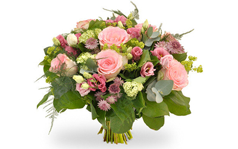
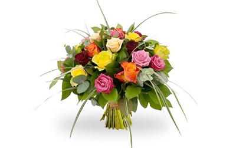
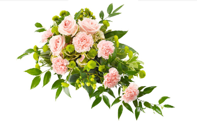
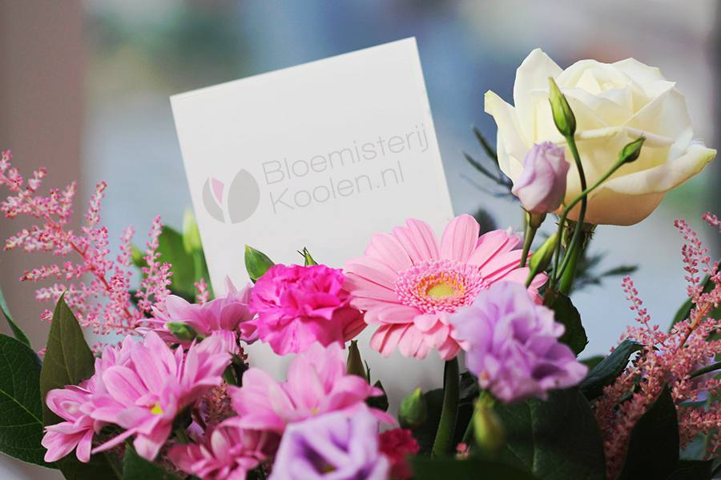
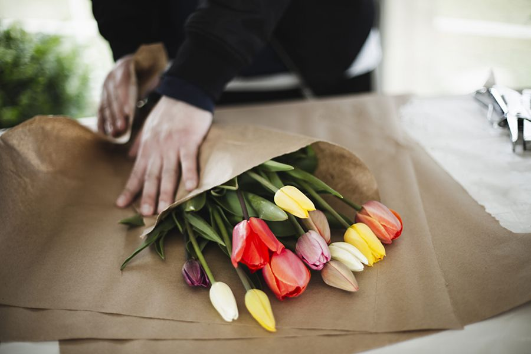

Een mooi assortiment verse snijbloemen. Via onze eigen bezorgdienst en aangesloten bloemisten leveren we in heel Nederland en België, met 100% levergarantie op ieder adres in Nederland.



Kies de kleur bloemen die u wenst: wit, roze, rood, geel en oranje, kleurrijk of overige kleuren. Vrijwel alle maatwerk is mogelijk.
Bloemisterij Koolen is gevestigd aan uitvaartcentrum Zuylen. Gezien de locatie zijn we zeer gespecialiseerd in het samenstellen van de laatste bloemengroet.


Wij hebben een mooi assortiment bloemen en planten, speciaal voor een bezoek aan de begraafplaats. Ook voor grafkaarsen, vazen, zijden bloemen, ornamenten en lantaarns bent u bij ons aan het juiste adres.